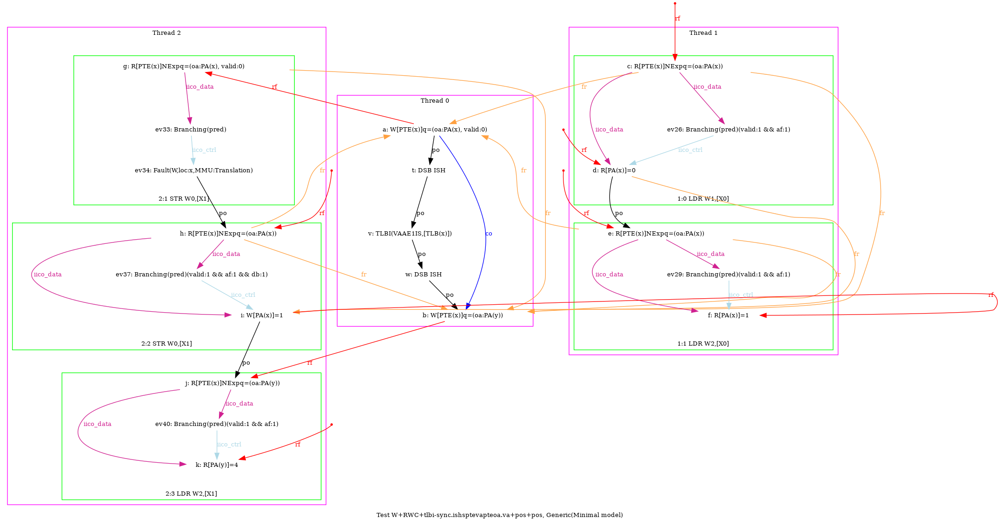
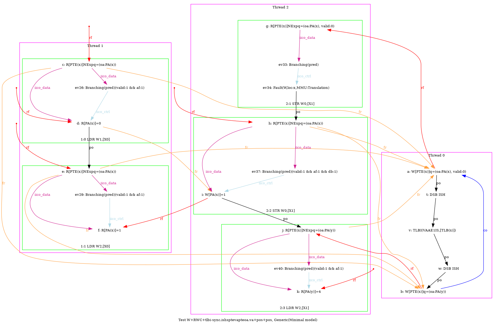
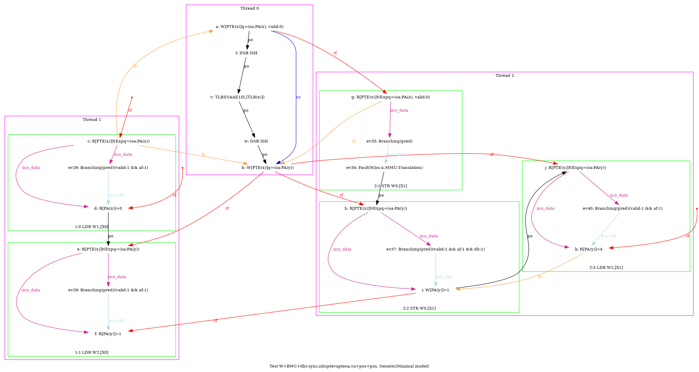
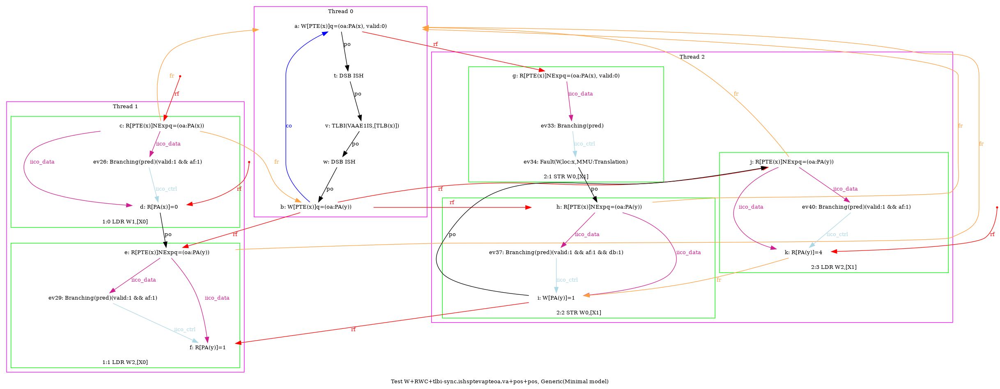

   …
AArch64 W+RWC+tlbi-sync.ishsptevapteoa.va+pos+pos
"TLBI-sync.ISHsWWPteVAPteOA.VA RfePteOA.VAP PosRR Fre PosWR FrePPteVA"
Variant=imprecise
Cycle=Fre PosWR FrePPteVA TLBI-sync.ISHsWWPteVAPteOA.VA RfePteOA.VAP PosRR
Relax=[PteVA,TLBI-sync.ISHsWW,PteOA,PteVA]
Safe=Rfe Fre PosWR PosRR
Generator=diy7 (version 7.56+02~dev)
Com=Rf Fr Fr
Orig=TLBI-sync.ISHsWWPteVAPteOA.VA RfePteOA.VAP PosRR Fre PosWR FrePPteVA
{ int x=0; int y=4;
0:X0=PTE(x); 0:X1=(oa:PA(x), valid:0); 0:X2=(oa:PA(y)); 0:X3=x;
1:X0=x;
2:X1=x;
}
P0 | P1 | P2 ;
STR X1,[X0] | LDR W1,[X0] | MOV W0,#1 ;
LSR X4,X3,#12 | LDR W2,[X0] | STR W0,[X1] ;
DSB ISH | | LDR W2,[X1] ;
TLBI VAAE1IS,X4 | | ;
DSB ISH | | ;
STR X2,[X0] | | ;
exists (1:X1=0 /\ 1:X2=1 /\ 2:X2=4 /\ fault(P2,x,MMU:Translation) /\ ~fault(P1,x))